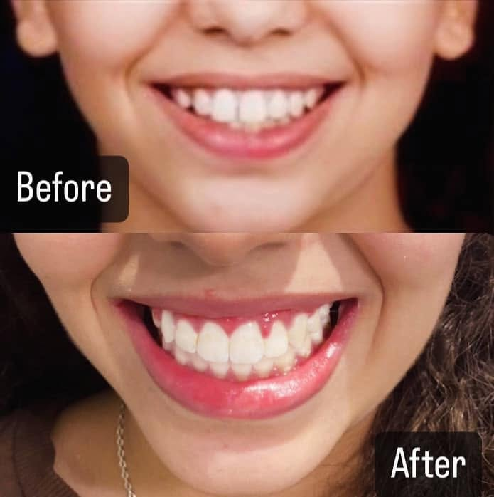
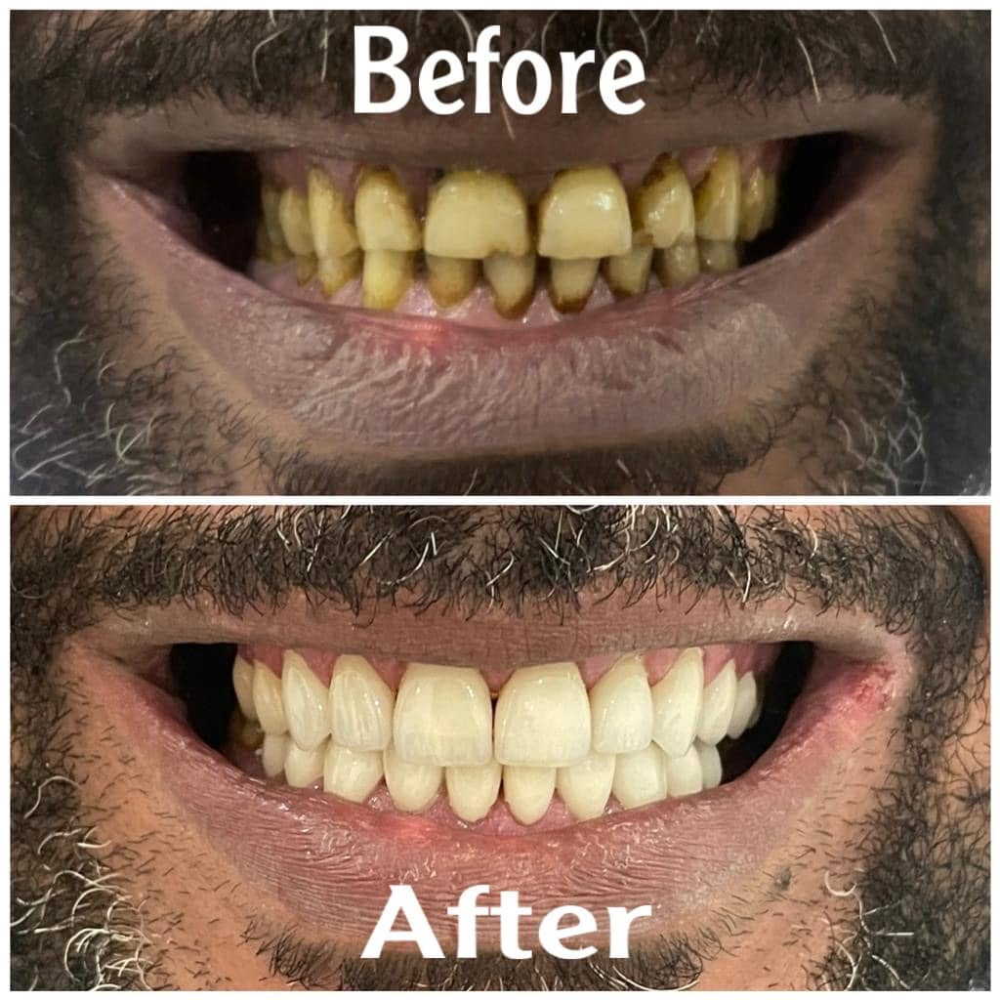
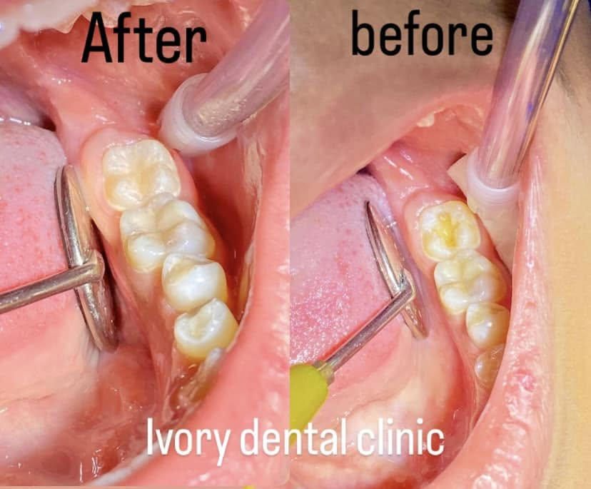

Ivory Dental Clinic — مدينة نصر، القاهرة
زراعة وتجميل
الأسنان
د. أيمن فاطين — طبيب متخصص في زراعة وتجميل الأسنان الفورية، الفينير، وعلاج الجذور. نستقبلكم يوميًا من السبت إلى الخميس، من ١٢ ظهرًا حتى ١٠ مساءً.
زراعة الأسنان
بنجاح
قبل كل زراعة
خدمات العيادة
نتعامل مع كل حالة على حدة
زراعة الأسنان الفورية
نستخدم أشعة CBCT لتخطيط موضع الزرعة بدقة قبل الجلسة. في أغلب الحالات بيتم تركيب السن المؤقت في نفس اليوم — بدون جراحة تقليدية وبدون غرز.
تبييض وهوليود سمايل
قشور خزفية (فينير) بنصممها حسب شكل الوش والأسنان. النتيجة طبيعية — مش أبيض زيادة عن اللزوم. بنتجنب برد الأسنان المفرط علشان نحافظ عليها.
علاج الجذور بدون ألم
علاج عصب بالمجهر الرقمي — الجلسة في الغالب بتكون واحدة. التخدير الموضعي بيخلي الإجراء مريح تمامًا، ومعظم المرضى بيتفاجأوا إنهم مش حاسين بحاجة.
تقويم الأسنان الشفاف
تقويم شفاف غير مرئي — بديل عملي للأسلاك المعدنية، خصوصًا للكبار. بيتشال وقت الأكل والتنظيف، والنتيجة بتبان بعد أسابيع قليلة.
من شغل العيادة
نتائج حقيقية لحالات حقيقية



الطبيب المعالج
د. أيمن فاطين
أخصائي زراعة وتجميل الأسنان — مؤسس Ivory Dental Clinic
بمارس طب الأسنان من أكتر من ١٥ سنة. حصلت على زمالة الكلية الملكية في إنجلترا وأنا عضو في الجمعية الأمريكية لزراعة الأسنان. أكتر حاجة بهتم بيها إن المريض يكون مرتاح ومطمن — من أول ما بيدخل العيادة لحد ما بيخلّص العلاج والمتابعة.
- زمالة الكلية الملكية لجراحي الأسنان — إنجلترا
- عضو الجمعية الأمريكية لزراعة الأسنان
- بيئة معقمة بالكامل حسب معايير مكافحة العدوى
- متابعة مجانية بعد كل إجراء
آراء مرضى العيادة
“الدكتور أيمن عالج وجع ضرس كان مأرقني من شهور. الجلسة كانت سريعة ومحسيتش بحاجة. المتابعة اللي بعد كده كانت ممتازة — اتصلوا بيا يطمنوا عليا”
“عملت فينير ٨ أسنان والنتيجة طبيعية جدًا. الدكتور اهتم إن اللون والشكل يكونوا متناسبين مع وشي — مش مجرد أبيض وخلاص”
“بخاف جدًا من دكاترة الأسنان بس الجو هنا مريح والفريق صبور. أول مرة أخلّص جلسة علاج عصب وأنا مرتاحة”
العنوان والمواعيد